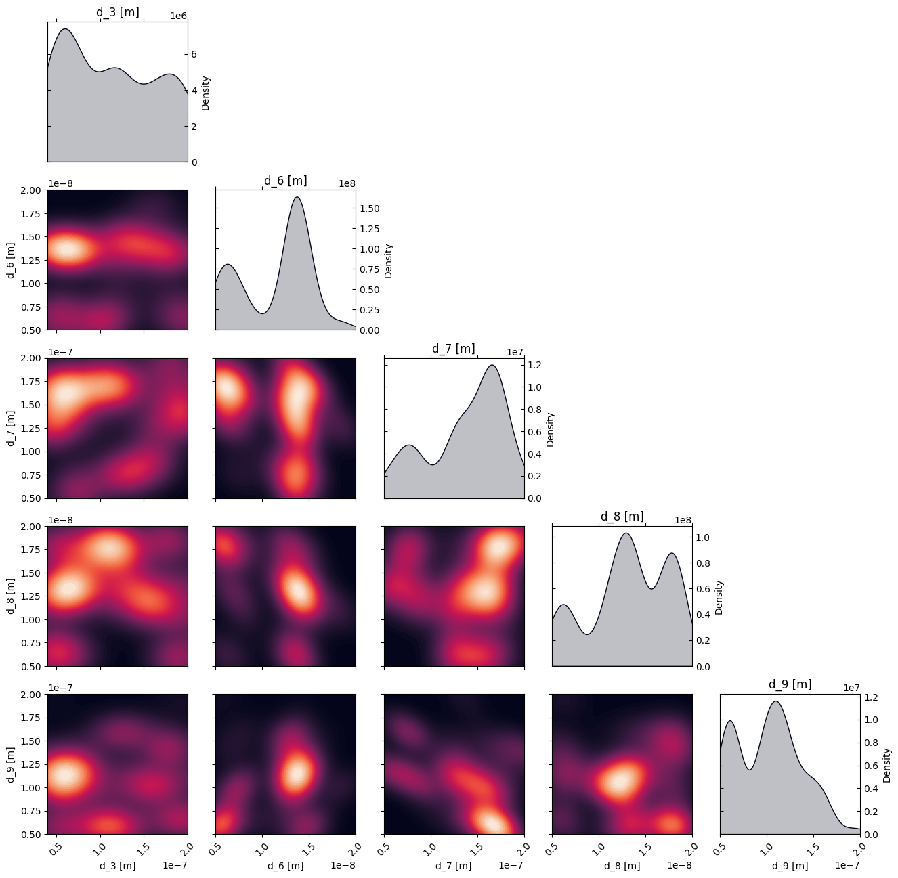
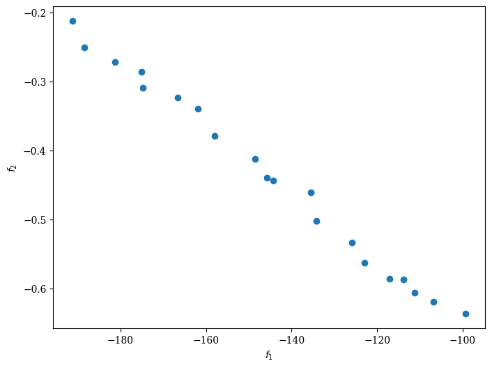
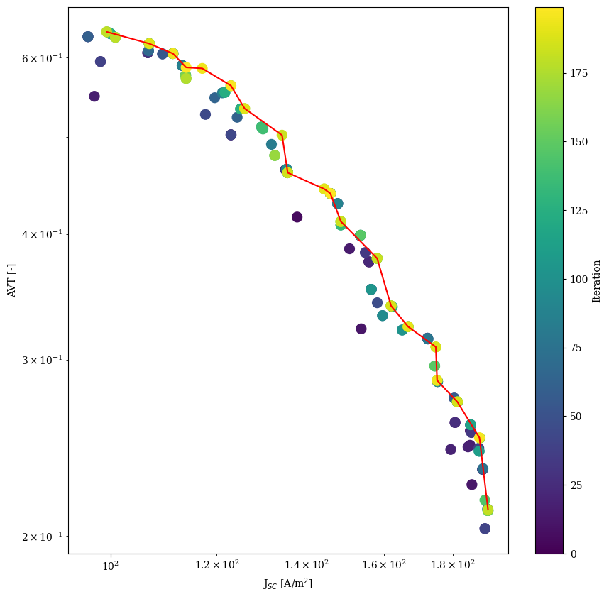

Pymoo: Layer stack optimization with Transfer Matrix Method (TMM)
This notebook demonstrate the use of multi-objective Bayesian optimization in combination with transfer matrix modeling (TMM) to optimize the thickness of the layers in a multilayer stack and the choice of materials to maximize the average visible transmittance (AVT) and the current density (Jsc) of a solar cell.
To perform the transfer matrix modeling we use a modified version of the open-source program devoloped by McGehee’s group (Stanford University) and adapted to python by Kamil Mielczarek (University of Texas).
For more information about the transfer matrix modeling, please refer to the original paper.
[ ]:
# Import necessary libraries
import warnings, os, sys, matplotlib, itertools
# remove warnings from the output
os.environ["PYTHONWARNINGS"] = "ignore"
warnings.filterwarnings('ignore')
warnings.filterwarnings(action='ignore', category=FutureWarning)
warnings.filterwarnings(action='ignore', category=UserWarning)
import pandas as pd
import matplotlib.pyplot as plt
import numpy as np
try:
from optimpv import *
from optimpv.optimizers.pymooOpti.pymooOptimizer import PymooOptimizer
except Exception as e:
sys.path.append('../') # add the path to the optimpv module
from optimpv import *
from optimpv.optimizers.pymooOpti.pymooOptimizer import PymooOptimizer
Define the parameters for the simulation
[2]:
params = []
d_3 = FitParam(name = 'd_3', value = 80e-9, bounds = [40e-9, 200e-9], log_scale = False, rescale = True, value_type = 'float', type='range', display_name='d_3',unit='m')
params.append(d_3)
d_6 = FitParam(name = 'd_6', value = 10e-9, bounds = [5e-9, 20e-9], log_scale = False, rescale = True, value_type = 'float', type='range', display_name='d_6',unit='m')
params.append(d_6)
d_7 = FitParam(name = 'd_7', value = 100e-9, bounds = [50e-9, 200e-9], log_scale = False, rescale = True, value_type = 'float', type='range', display_name='d_7',unit='m')
params.append(d_7)
d_8 = FitParam(name = 'd_8', value = 10e-9, bounds = [5e-9, 20e-9], log_scale = False, rescale = True, value_type = 'float', type='range', display_name='d_8',unit='m')
params.append(d_8)
d_9 = FitParam(name = 'd_9', value = 100e-9, bounds = [50e-9, 200e-9], log_scale = False, rescale = True, value_type = 'float', type='range', display_name='d_9',unit='m')
params.append(d_9)
Run the optimization
[3]:
# Initialize the agent and default device stack
layers = ['SiOx' , 'ITO' , 'ZnO' , 'PCE10_FOIC_1to1' , 'MoOx' , 'Ag', 'MoOx', 'LiF','MoOx', 'LiF','Air'] # list of layers (need to be the same than the name nk_*.csv file in the matdata folder)
thicknesses = [0 , 100e-9 , 30e-9 , 100e-9 , 9e-9 , 8e-9, 100e-9, 100e-9, 100e-9, 100e-9, 100e-9]# list of thicknesses in nm
mat_dir = os.path.join(os.path.abspath('../'),'Data','matdata') # path to the folder containing the nk_*.csv files
lambda_min = 350e-9 # start of the wavelength range
lambda_max = 800e-9 # end of the wavelength range
lambda_step = 1e-9 # wavelength step
x_step = 1e-9 # x step
activeLayer = 3 # active layer index
spectrum = os.path.join(mat_dir ,'AM15G.txt') # path to the AM15G spectrum file
photopic_file = os.path.join(mat_dir ,'photopic_curve.txt') # path to the photopic spectrum file
[ ]:
from optimpv.models.TransferMatrix.TransferMatrixAgent import TransferMatrixAgent
TMAgent = TransferMatrixAgent(params, [None,None], layers=layers, thicknesses=thicknesses, lambda_min=lambda_min, lambda_max=lambda_max, lambda_step=lambda_step, x_step=x_step, activeLayer=activeLayer, spectrum=spectrum, mat_dir=mat_dir, photopic_file=photopic_file, exp_format=['Jsc', 'AVT'],metric=[None,None],loss=[None,None],threshold=[4,0.1],minimize=[False,False])
[5]:
# Define the optimizer
optimizer = PymooOptimizer(params=params, agents=TMAgent, algorithm='NSGA2', pop_size=20, n_gen=10, name='pymoo_single_obj', verbose_logging=True,max_parallelism=100, )
[6]:
res = optimizer.optimize()
[INFO 12-05 11:34:34] optimpv.pymooOptimizer: Starting optimization using NSGA2 algorithm
[INFO 12-05 11:34:34] optimpv.pymooOptimizer: Population size: 20, Generations: 10
[INFO 12-05 11:34:59] optimpv.pymooOptimizer: Generation 1: Best objective = -189.419426
==========================================================
n_gen | n_eval | n_nds | eps | indicator
==========================================================
1 | 20 | 11 | - | -
[INFO 12-05 11:35:24] optimpv.pymooOptimizer: Generation 2: Best objective = -190.173947
2 | 40 | 19 | 0.0534279756 | ideal
[INFO 12-05 11:35:47] optimpv.pymooOptimizer: Generation 3: Best objective = -190.173947
3 | 60 | 20 | 0.0109179305 | f
[INFO 12-05 11:36:09] optimpv.pymooOptimizer: Generation 4: Best objective = -191.085206
4 | 80 | 20 | 0.0096029792 | ideal
[INFO 12-05 11:36:30] optimpv.pymooOptimizer: Generation 5: Best objective = -191.085206
5 | 100 | 20 | 0.0106229381 | ideal
[INFO 12-05 11:36:51] optimpv.pymooOptimizer: Generation 6: Best objective = -191.170815
6 | 120 | 20 | 0.0088768115 | f
[INFO 12-05 11:37:12] optimpv.pymooOptimizer: Generation 7: Best objective = -191.170815
7 | 140 | 20 | 0.0092895808 | f
[INFO 12-05 11:37:33] optimpv.pymooOptimizer: Generation 8: Best objective = -191.170815
8 | 160 | 20 | 0.0048712468 | ideal
[INFO 12-05 11:37:54] optimpv.pymooOptimizer: Generation 9: Best objective = -191.170815
9 | 180 | 20 | 0.0104517752 | f
[INFO 12-05 11:38:16] optimpv.pymooOptimizer: Generation 10: Best objective = -191.183109
[INFO 12-05 11:38:16] optimpv.pymooOptimizer: Optimization completed after 11 generations
[INFO 12-05 11:38:16] optimpv.pymooOptimizer: Number of function evaluations: 200
[INFO 12-05 11:38:16] optimpv.pymooOptimizer: Final population size: 20
[INFO 12-05 11:38:16] optimpv.pymooOptimizer: Pareto front size: 20
10 | 200 | 20 | 0.0071081682 | f
[7]:
# get the best parameters and update the params list in the optimizer and the agent
optimizer.update_params_with_best_balance() # update the params list in the optimizer with the best parameters
TMAgent.params = optimizer.params # update the params list in the agent with the best parameters
# print the best parameters
print('Best parameters:')
for p in optimizer.params:
print(p.name, 'fitted value:', p.value)
Best parameters:
d_3 fitted value: 4.630343673366701e-08
d_6 fitted value: 1.3983967236406322e-08
d_7 fitted value: 1.3553606711555714e-07
d_8 fitted value: 6.399913322395872e-09
d_9 fitted value: 1.9557837672834854e-07
[9]:
# Plot the density of the exploration of the parameters
# this gives a nice visualization of where the optimizer focused its exploration and may show some correlation between the parameters
plot_dens = True
if plot_dens:
from optimpv.posterior.exploration_density import *
fig_dens, ax_dens = plot_density_exploration(params, optimizer = optimizer, optimizer_type = 'pymoo')

[10]:
from pymoo.visualization.scatter import Scatter
Scatter().add(res.F, label="Pareto Front").show()
[10]:
<pymoo.visualization.scatter.Scatter at 0x7c80e46d1010>

[11]:
comb = list(combinations(optimizer.all_metrics, 2))
threshold_list = []
for i in range(len(optimizer.agents)):
for j in range(len(optimizer.agents[i].threshold)):
threshold_list.append(optimizer.agents[i].threshold[j])
threshold_comb = list(combinations(threshold_list, 2))
pareto = np.asarray(res.F)
cm = matplotlib.colormaps.get_cmap('viridis')
df = optimizer.get_df_from_pymoo() # get the dataframe from the optimizer
for metric, mini in zip(optimizer.all_metrics,optimizer.all_minimize):
if not mini:
df[metric] = -df[metric]
dum_dic = {}
for i , metr in enumerate(optimizer.all_metrics):
if i not in df.keys():
if not optimizer.all_minimize[i]:
dum_dic[metr] = -pareto[:, i]
df_pareto = pd.DataFrame(dum_dic)
dum_dic = TMAgent.run_Ax(parameters={})
best_balanced = [dum_dic[metr] for metr in optimizer.all_metrics]
for c,t_c in zip(comb,threshold_comb):
plt.figure(figsize=(10, 10))
plt.scatter(df[c[0]],df[c[1]],c=df.index, cmap=cm, marker='o', s=100) # plot the points with color according to the iteration
cbar = plt.colorbar()
cbar.set_label('Iteration')
sorted_df = df_pareto.sort_values(by=c[0])
plt.plot(sorted_df[c[0]],sorted_df[c[1]],'r')
plt.xlabel(r'J$_{SC}$ [A/m$^2$]')
plt.ylabel(r'AVT [-]')
plt.xscale('log')
plt.yscale('log')
plt.show()
